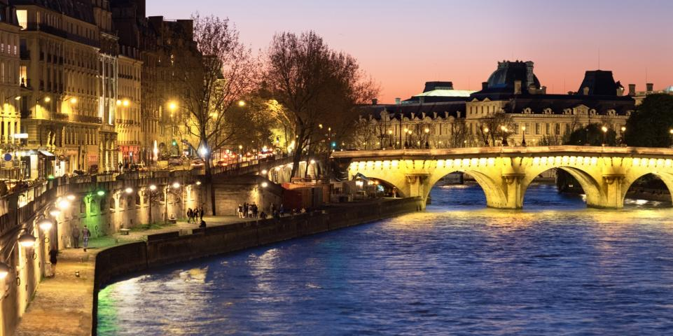

À la sortie du métro, place Valhubert, le Jardin des Plantes fait face au quai Saint-Bernard. Cet écrin de verdure proche des rives de la Seine abrite le Muséum national d'histoire naturelle, la célèbre Grande Galerie de l’Evolution ainsi que des serres tropicales et une ménagerie. Tendez l’oreille en longeant le quai, vous pourriez entendre les animaux du zoo babiller !
Ensuite, longez toujours la Seine, puis traversez le pont de la Tournelle pour rejoindre l’île Saint-Louis, « l’île des Palais ». Faites une halte pour admirer le panorama sur le chevet de la cathédrale Notre-Dame, qui, malgré l’incendie d’avril 2019, impressionne toujours autant. Si vous avez le temps, arpentez les rues de ce quartier cossu de Paris. Quais d’Orléans et de Bourbon, place Louis Aragon… appréciez la douceur de vivre qui règne ici entre les canards rieurs, les beaux hôtels particuliers – dont celui de la rue d’Anjou (au numéro 15) où Charles Baudelaire et le poète Théophile Gautier ont fondé le Club des Hachischins – les galeries d’art et la fameuse maison de glace Berthillon. Empruntez ensuite le pont Marie, dans le prolongement du premier, pour rejoindre la rive droite de la Seine, sur le quai des Célestins.
Descendez le long de l’ancienne voie Georges Pompidou pour profiter du parc Rives de Seine qui, depuis quelques années, offre une bouffée d’oxygène aux Parisiens et curieux venus du monde entier. Long de 2,3 km, il s’étend sur 10 hectares du pont de l'Alma au pont des Arts, rive gauche et du pont Neuf au port de l’Arsenal, rive droite. Tout au long de ce parcours, des installations sportives, des terrains de pétanque, un mur d’escalade pour les plus petits ou encore des cafés y ont été aménagés. C’est ici que Paris Plages pose ses valises l’été pour apporter un sentiment de vacances en plein cœur de la ville avec chaises longues, parasols et animations multiples. Remontez au niveau du pont au Change et traversez-le pour découvrir l’île de la Cité.
Dès votre arrivée sur l’île de la Cité, vous êtes accueillis par la Tour de l’Horloge, dont le cadran donne fidèlement l’heure depuis 1371. Délaissez les quais quelques instants pour aller admirer la Conciergerie, la Sainte Chapelle, le Palais de Justice et la cathédrale Notre-Dame bien sûr ! Puis longez les quai aux Fleurs et de la Corse et enfin poursuivez quai de l’horloge, tournez à gauche dans la rue de Harlay pour traverser la place Dauphine jusqu’à la statue équestre d’Henri IV et le square du Vert-Galant.